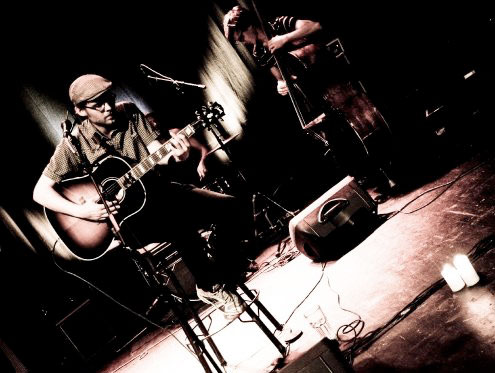

Biography
International spillemand klar med nyt album
De seneste år har Benjamin Aggerbæks musik bragt ham rundt i store dele af verden – og lagt grunden for hans 3 ugentlige sangskriver-scener. Nu er Aggerbæk klar med sin 2. plade – en plade der i høj grad indkapsler spillemandens liv på farten.
Siden 2006 har Benjamin Aggerbæk været i New York ikke mindre end 7 gange for at give koncerter. I 2008 blev det til en længere tour der også bragte ham til Austin, Odessa og Chicago – og senest, i 2009, 11 koncerter i New York med fuldt band, Benjamin's ”Aggerbæk Kvintet”.
Lægger man hertil de 3 ugentlige sangskriver-scener Benjamin arrangerer i København samt en god portion andre koncerter i ind- og udland, tegner der sig et billede af en mand på farten.
Alligevel er der i sommeren 2009 blevet tid til at indspille en ny plade: ”My Oh My” indeholder sange fra landevejen (bl.a. Sct. Peters Blues fra Rusland, Orange Moon fra Austin), sange til og om kvinder, sange om den svære kærlighed. Benjamins inspirationskilder er så forskellige som Louis Armstrong, Tom Waits, Led Zeppelin og Bach, Händel m.fl.
”Jeg prøver at understrege mine inspirationskilder tydeligt på denne plade. Ikke for at plagiere eller sætte mig op på siden af dem – men for at give et bud på hvordan inspirationen kan udvikle sig gennem mig og min musikalitet. Min filosofi er at ”stjæle fra de bedste og gøre det til mit eget”!”
I 2008 modtog Benjamin den nordsjællandske jazzfestival ”New Note Festival”s ærespris for arbejdet for originalmusikken på de ugentlige
open-mic sangskriver-scener i København og omegn samt debutpladen
”Back In Town”.
|